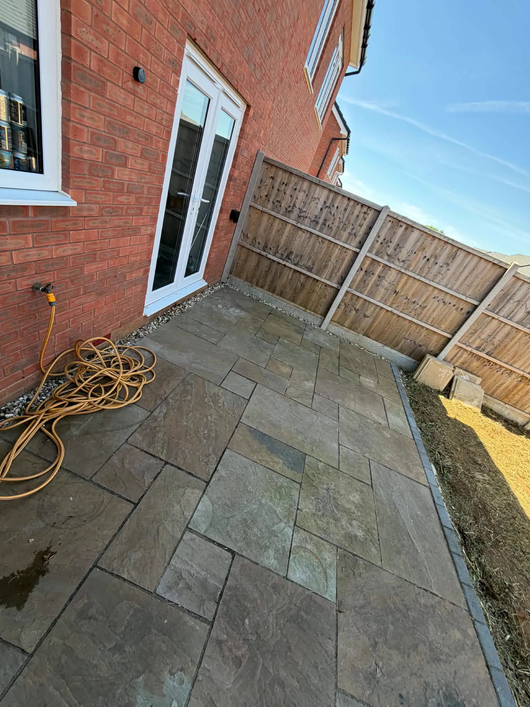

Driveway pressure washing
Freshen up the approach to your home. Mention the surface material, approximate area and any specific marks or damaged areas.
Enquire about this category04 / OUTDOOR CLEANING
Sometimes it is the existing surface that needs attention. Before you think about replacing it, talk to County about cleaning the outdoor areas you already have.
Discuss outdoor cleaningOUTDOOR CLEANING
One job or several — tell us what your space needs. We’ll discuss the details and agree the work with you.
Freshen up the approach to your home. Mention the surface material, approximate area and any specific marks or damaged areas.
Enquire about this categoryGive an existing seating area some attention. Discuss its condition, access, water availability and nearby planting.
Enquire about this categorySomething else in mind? Call 07526 024115 and ask.
Tell us what the area is made from, if you know. A paved patio, a path and other outdoor surfaces can have different cleaning requirements. Include what you would like addressed: general dirt, build-up or particular marks.
A broad photograph shows the area, while a closer photograph can help explain the surface and its condition. If you do not know the material, include that in your enquiry.
Mention loose areas, damaged edges or joints that already need attention. Cleaning and repairing a surface are separate questions, and the proposed work should make clear what is included.
Discuss the result you are hoping for without assuming every mark can be removed. The material, existing condition and type of staining all influence what can reasonably be achieved.
Approximate area, access, outdoor water availability and where water drains are useful details. Mention nearby planting or anything that would need to be moved before work starts.
If the area is regularly used as an entrance or route through the garden, say so. Agree preparation and any follow-up work separately so you know what to expect from the visit.

Inspiration imagery from Dee’z Gardens, used as temporary photography. Not completed County Landscapes work.
MAKE THE FIRST CONVERSATION COUNT
Area, material, condition and access influence the scope. Let the team know about water availability and any specific marks; cleaning does not automatically include repairs or other treatments.
Start your outdoor cleaning enquiryNo need to have every answer. Start with what you know.
OUTDOOR CLEANING / QUESTIONS
It helps if you do, but you can start with photographs. Mention any information you have about the surface and whether it has been treated previously.
Some marks can be more persistent than others. Discuss the particular staining and the surface before agreeing the work; a like-new finish should not be assumed.
Do not assume so. If joints, edges or other areas need attention, mention them and ask whether any additional work can be discussed and priced separately.
LET’S TALK ABOUT YOUR GARDEN